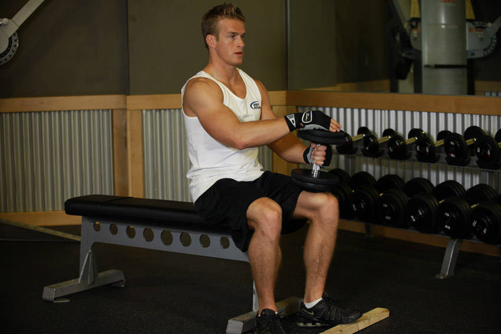

- Place a block on the floor about 12 inches from a flat bench.
- Sit on a flat bench and place a dumbbell on your upper left thigh about 3 inches above your knee.
- Now place the ball of your left foot on the block. This will be your starting position.
- Raise your toes up as high as possible as you exhale and you contract your calf muscle. Hold the contraction for a second.
- Slowly return to the starting position, stretching as far down as possible.
- Repeat for your prescribed number of repetitions and then repeat with the right leg.